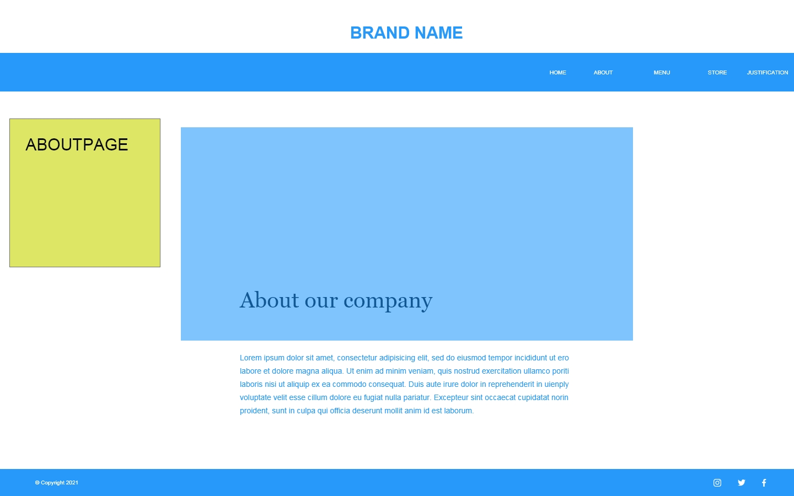
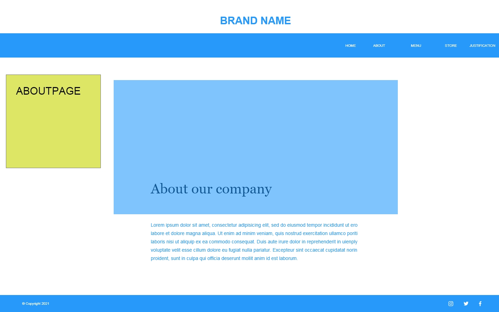

Design Elements


The design of the website started quite earlier on. I soon came up with the idea that I wanted to make a website in relation to food. Throughout the course of quarantine, I got more into vegan food and the idea that you could also make culinary food made totally vegan. That is why I made a website for a restaurant that serves culinary vegan recipes. Next to that I wanted it to be easier for those who would be interesting in making vegan recipes at home to have access to. That is why I decided to ad a kind of blogpost for recipes special for the chefs to interact with the visitors of the website and restaurant. From this idea I came up with the name &Chef’s for the idea that everyone from the ease of their own kitchen can make delicious recipes together with a chef. For the color palette I looked for a scheme that represents herbs and spices from all over the world (See Picture above for color codes). For the font I wanted to combine a commonly used font on restaurant websites (Open Sans) with a font that can be looked upon as modern (Courier). The combination of the colors, pictures and font styles needs to create the idea of a modern culinary vegan restaurant. In the flow diagram there is an easy navigation to run throughout the website.

 
